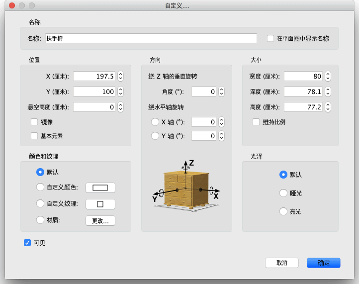

| 自定义物件 | |||
如果您要自定义家居模型中物件的位置、大小、悬空高度和角度，您既可以用鼠标直接在平面图中操作，也可以使用平面图→自定义墙体... 菜单项。 如果平面图中只有一个物件被选中的话，拖曳显示在被选物体四个角上的标示符分别可以更改物件的大小、悬空高度和角度。
|

|
当鼠标指针位于这些标示符上时，其形状会发生变化，指示您可以拖曳鼠标更改相应的属性。当鼠标按钮处于按下状态时，鼠标指针的旁边会显示出标明相对应属性值的工具提示。 自定义物件的另一种途径是使用“自定义物件”对话框，方法是在平面图中双击您想要更改的物件，或者在选中要更改的物件后使用物件→自定义... 菜单项。  在该对话框中，您可以更改物件的名称、中心点的横坐标（X）和纵坐标（Y）、底部离开地面的距离、宽度、深度、高度、颜色、自身可见性、旋转角度、名称在平面图中的可见性，以及是否在 3D 视图中镜像显示。 |
|